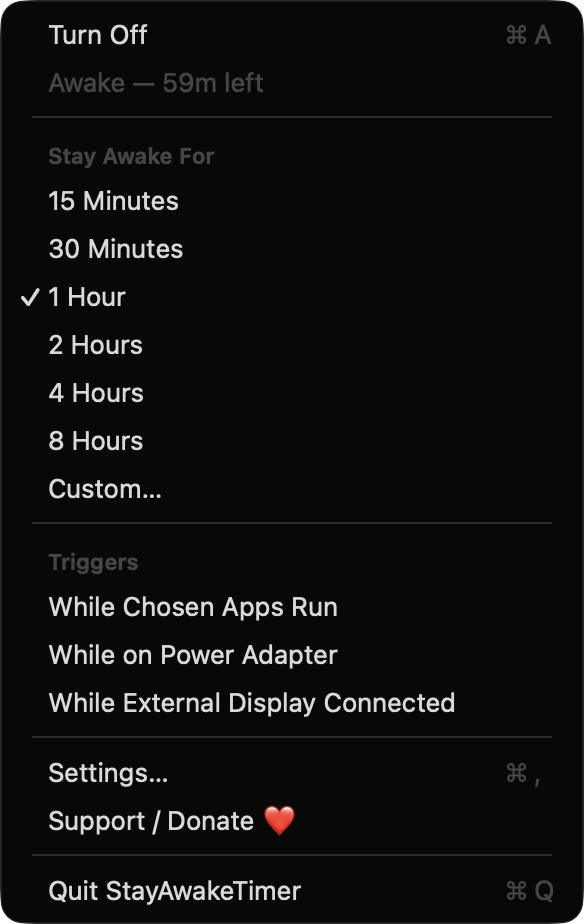
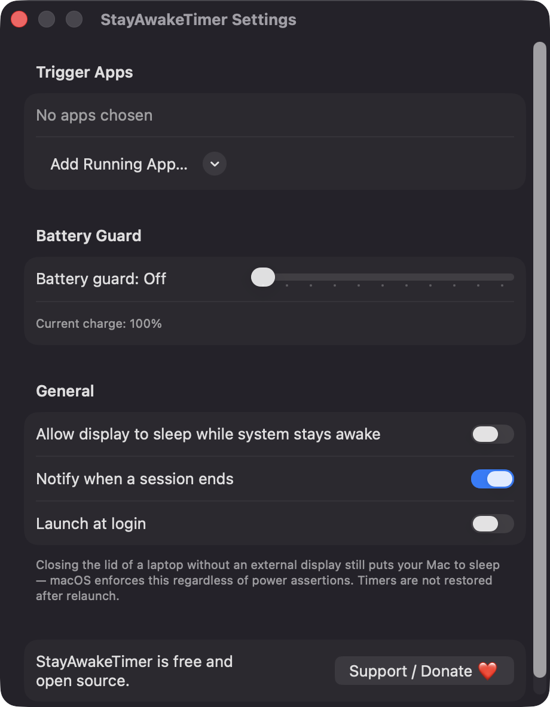
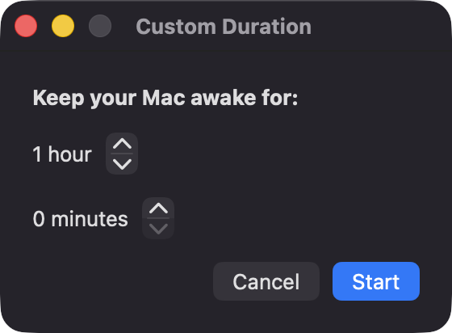

Timed sessions
Pick 15 minutes, 30 minutes, 1, 2, 4 or 8 hours, or set a custom duration up to 24 h 55 m. The time left shows in the menu bar only while a timer runs.
Open source · macOS 14+ · Universal binary · Battery & Power
Prevent sleep from the menu bar for 15 minutes up to 24 hours, or automatically while chosen apps run, on power, or with an external display. Toggle it with ⌘A in the menu.
Free & MIT licensed · Apple Silicon & Intel · Latest release

Features
Timers, automatic triggers and a battery guard, all running locally with Apple frameworks only.
Pick 15 minutes, 30 minutes, 1, 2, 4 or 8 hours, or set a custom duration up to 24 h 55 m. The time left shows in the menu bar only while a timer runs.
Stay awake while any app you choose is running, while the Mac is on the power adapter, or while an external display is connected.
On battery, every session ends when the charge drops below a threshold you set between 5% and 50%. You can also turn the guard off.
Keep the system running while the screen turns off, or keep both awake. One setting controls which.
Get an optional notification when a session finishes or the battery guard stops it. Turn it off in Settings if you prefer quiet.
Overlapping reasons share one power assertion, everything is released on quit, and timers are not restored after a relaunch. Clock changes are handled because the end time is stored as a date.
Screenshots


Install
StayAwakeTimer is open source and not notarized with a paid Apple Developer ID, so macOS needs one extra step the first time.
xattr -cr /Applications/StayAwakeTimer.app
Download
Free, forever. Built for macOS 14 Sonoma or newer, Apple Silicon and Intel.
Not notarized: on first launch right-click StayAwakeTimer.app → Open.
FAQ
Yes. It is released under the MIT license and the full source is in the GitHub repository. There are no ads, no account, no analytics and no third-party dependencies. If you find it useful, there is an optional Support button in the menu and Settings.
Notifications are optional and are used only to tell you when a session ends or the battery guard fires. Launch at login is optional too. It does not need Accessibility, Screen Recording or Microphone access.
Your preferences, such as trigger apps, the battery threshold and notification settings, are stored locally on your Mac in the app's standard preferences. The app makes no network calls, so nothing leaves your machine.
Notarization requires a paid Apple Developer account, and this is a free open-source project. Right-click the app and choose Open once to get past Gatekeeper, or build it yourself from source with Xcode.
Yes. StayAwakeTimer was generated by Claude Code from a written spec as a clean-room reimplementation, with no code or assets from any commercial app. The full source is on GitHub under MIT, so you can read every line before you run it. It has had less human review than a hand-written app, so bug reports are welcome.
Support ❤️
StayAwakeTimer is a free, open-source alternative to paid utilities. If it earns a spot on your Mac, a coffee keeps the updates coming.
☕ Support Or on Ko-fi